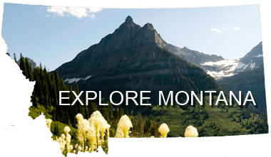

Montana is known to most who live there as "the last best
place". To me this couldn't be a more valid way to describe the state.
Montana is full of beautiful scenery, adventure, and some of the best
people I have ever come across. Mant of those who have not visted the state,
much like myself three years ago, think only cowboys live here. I quickly
learned that although yes many people here do own or work on a ranch or
participate in rodeo, most are just down right good people. Montana is
so welcoming and captivating I oftten miss it when I go home even for a
breif period of time.
I strongly urge everyone who has not yet been to Montana to come check it out. You will not be disapointed with the surroundings. You will see overwhelming landscapes of mountains and rivers. Majestic forests will captivate you as you hike through them. The fishing will get you hooked and want to come back for more. The wildlife will amaze you as it takes you back to a time before cities existed. The Montana lifestle will keep you relxed and excited all at the same time. I highly recommend planning a trip longer then a few days to come explore the wonders that Montana has for everyone to enjoy.
